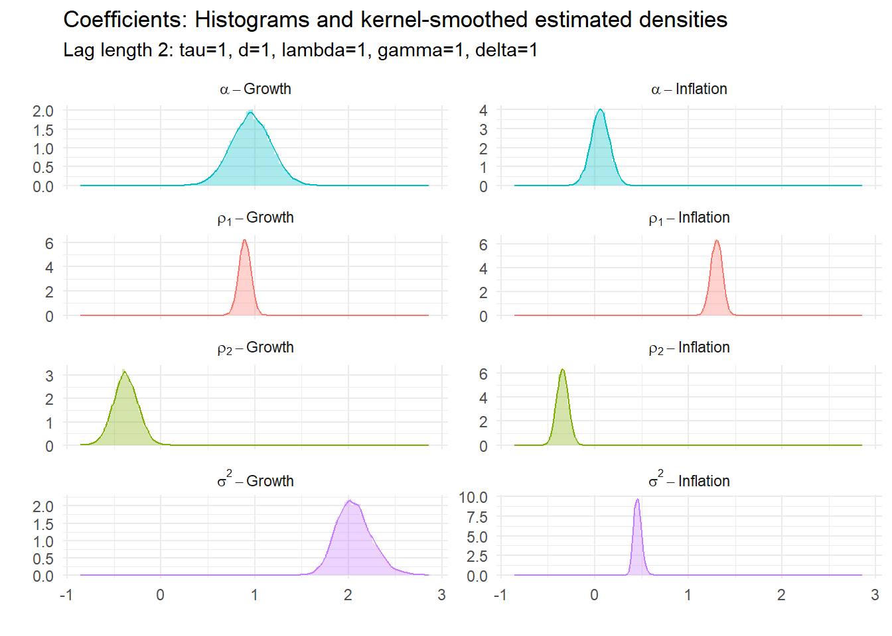
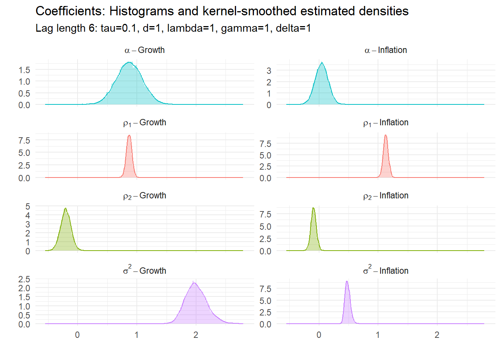
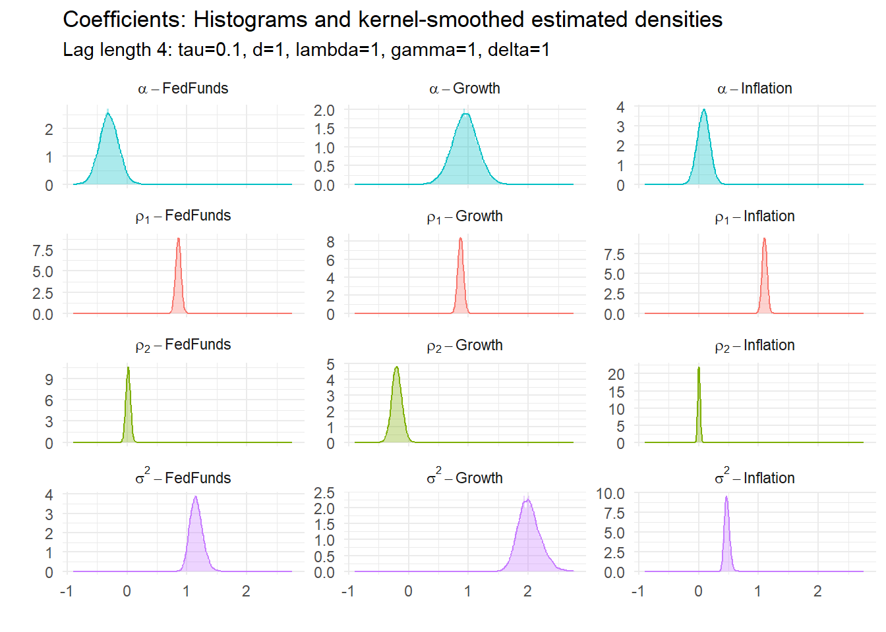

3 BVAR with dummies
3.1 Estimating BVARs using US data
We will the Fed Funds rate, annual GDP growth and annual CPI inflation data from FRED, retrieved 2023-05-23. These are:
We will build a variety and two and three variable BVARs. More details on the data are given below.
3.2 BVARs with dummy variable priors
Rather than combine a prior distribution with a likelihood and draw from the resulting joint posterior distribution there is another convenient way of parameterizing the problem. We can instead add some ‘dummy variables’ that have the same properties of the prior so we have a single modified likelihood that incorporates the prior information. This approach was most obviously adopted by Banbura, Giannone, and Reichlin (2010). Further discussion of this can be found in Giannone, Lenza, and Primiceri (2015). In general this is a version of the Theil and Goldberger (1961) mixed estimator given a Bayesian interpretation.
3.2.1 VAR model
Simple bi-variate two-lag VAR model: \[ \left[\matrix{g_t \cr \pi_t}\right] = \left[\matrix{c_1 \cr c_2}\right] + \left[\matrix{b_{11} & b_{12} \cr b_{21} & b_{22}}\right] \left[\matrix{g_{t-1} \cr \pi_{t-1} }\right] + \left[\matrix{d_{11} & d_{12} \cr d_{21} & d_{22}}\right] \left[\matrix{g_{t-2} \cr \pi_{t-2} }\right] + \left[\matrix{\nu_{g,t} \cr \nu_{\pi,t}}\right] \] \[ \left[\matrix{\nu_{g,t} \cr \nu_{\pi,t}}\right] \sim N(0, \Sigma) \]
3.3 BVAR hyperparameters
We will (similarly to the straightforward Minnesota prior) need some control parameters:
- \(\tau\) controls the overall tightness of the prior for the AR coefficients
- \(d\) controls the prior on higher lags;
- \(\lambda\) controls the prior on constants;
- \(\gamma\) controls the prior on the sum of coefficients;
- \(\delta\) controls the cointegration prior;
where
- \(\sigma_i\) standard deviation of error terms from individual OLS regressions;
- \(\mu_i\) sample means of the data.
3.3.0.1 First lag
Now consider the following artificial data for the first lag. We construct some dummy observations of the dependent and explanatory variables that look like: \[ Y_{D,1} = \left[\matrix{\frac{1}{\tau}\sigma_1 & 0 \cr 0 & \frac{1}{\tau}\sigma_2}\right] \] and \[ X_{D,1} = \left [ \matrix{0 & \frac{1}{\tau}\sigma_1 & 0 & 0 & 0\cr 0 & 0 & \frac{1}{\tau}\sigma_2 & 0 & 0}\right] \] Intuition: \[ \left[\matrix{\frac{\sigma_1}{\tau} & 0 \cr 0 & \frac{\sigma_2}{\tau}}\right] = \left[\matrix{0 & \frac{\sigma_1}{\tau} & 0 & 0 & 0\cr 0 & 0 & \frac{\sigma_2}{\tau} & 0 & 0} \right] \left[\matrix{c_1 & c_2 \cr b_{11} & b_{21} \cr b_{12} & b_{22} \cr d_{11} & d_{21} \cr d_{12} & d_{22}}\right] + \left[\matrix{\xi_{11} & \xi_{12} \cr \xi_{21} & \xi_{22} }\right] \] Multiplying out we get: \[ \left[\matrix{\frac{\sigma_1}{\tau} & 0 \cr 0 & \frac{\sigma_2}{\tau}}\right] = \left[\matrix{\frac{\sigma_1}{\tau}b_{11} & \frac{\sigma_1}{\tau}b_{21}\cr \frac{\sigma_2}{\tau}b_{12} & \frac{\sigma_2}{\tau}b_{22}} \right] + \left[\matrix{\xi_{11} & \xi_{12} \cr \xi_{21} & \xi_{22} }\right] \] Concentrating on the first row, notice: \[ \frac{\sigma_1}{\tau} = \frac{\sigma_1}{\tau}b_{11} + \xi_{11} \] implying: \[ b_{11} = 1 - \frac{\tau}{\sigma_1}\xi_{11} \] so we can write: \[ b_{11} \sim N\left(1, \frac{\tau^2var(\xi_{11})}{\sigma^2_1}\right) \] as \(E[b_{11}] = 1 - \frac{\tau}{\sigma_1}E[\xi_{11}] = 1\) and the variance is easily derived. Similarly: \[ b_{12} = - \frac{\tau}{\sigma_1}\xi_{12} \] which is clearly zero in expectation.
3.3.1 Further priors
3.3.1.1 Higher lags
Rather than derive the implications we state the rest of the dummy priors. Consider the following artificial data for the second lag: \[ Y_{D,2} = \left[\matrix{0 & 0 \cr 0 & 0}\right] \] and: \[ X_{D,2} = \left [ \matrix{0 & 0 & 0 & \frac{\sigma_1 2^d}{\tau} & 0 \cr 0 & 0 & 0 & 0 & \frac{\sigma_2 2^d}{\tau} }\right] \] We can multiply these out and check the properties, in particular we can verify in the same way as for the first lag that: \[ b_{ji} \sim N\left(0, \frac{1}{4}\frac{\tau^2var(\xi_{ji})} {2^d\sigma^2_j}\right) \] for \(j=1,...N\), \(i=1,...l\).
3.3.1.2 Constant
Consider the following artificial data for the constant: \[ Y_{D,3} = \left[\matrix{0 & 0 }\right] \] \[ X_{D,3} = \left [ \matrix{\lambda & 0 & 0 & 0 & 0 }\right] \] so \(\lambda c_1 = \varepsilon_1\) and \(\lambda c_2 = \varepsilon_2\). As \(\lambda \rightarrow \infty\) the prior is implemented more tightly.
3.3.1.3 Covariances
Dummy observations to implement the prior on the error covariance matrix are: \[ Y_{D,4} = \left[\matrix{\sigma_1 & 0 \cr 0 & \sigma_2}\right] \] and \[ X_{D,4} = \left [ \matrix{0 & 0 & 0 & 0 & 0 \cr 0 & 0 & 0 & 0 & 0 }\right] \] with the magnitude of the diagonal elements of \(\Sigma\) controlled by the scale of the diagonal elements of \(Y_{D,4}\), as larger diagonal elements implement the prior belief that the variance of \(\nu_1\) and \(\nu_2\) is larger.
Banbura, Giannone, and Reichlin (2010) stop here, but there are additional priors that could be added.
3.3.1.4 Sum of coefficients
We could add a prior that reflects the belief that the sum of coefficients on ‘own’ lags add up to 1. This is an additional ‘unit root’-style prior. Consider: \[ Y_{D,5} = \left[\matrix{\gamma\mu_1 & 0\cr 0 & \gamma\mu_2}\right] \] and \[ X_{D,5} = \left [ \matrix{0 & \gamma\mu_1 & 0 & \gamma\mu_1 & 0\cr 0 & 0 & \gamma\mu_2 & 0 & \gamma\mu_2}\right] \] where \(\mu_1\) is the sample mean of \(y_t\) and \(\mu_2\) is the sample mean of \(x_t\). Note that these dummy observations imply prior means of the form \(b_{ii} + d_{ii} = 1\) where \(i = 1, 2\) and \(\gamma\) controls the tightness of the prior. As \(\gamma \rightarrow \infty\) the prior is implemented more tightly. Forecast growth rates eventually converge to their sample averages.
3.3.1.5 Trends
We can also specify common stochastic trend dummies: \[ Y_{D,6} = \left[\matrix{\delta\mu_1 & \delta\mu_2 }\right] \] and \[ X_{D,6} = \left [ \matrix{\delta & \delta\mu_1 & \delta\mu_2 & \delta\mu_1 & \delta\mu_2 }\right] \] where this imposes that the coefficients are consistent with limiting the amount of drift between the predictions at their average values.
3.3.2 Implementation
The data and the artificial data are now stacked: \[ Y^* = \left[\matrix{ g_3 & \pi_3 \cr \vdots & \vdots \cr g_T & \pi_T \cr \frac{1}{\tau}\sigma_1 & 0 \cr 0 & \frac{1}{\tau}\sigma_2\cr 0 & 0 \cr 0 & 0 \cr 0 & 0 \cr \sigma_1 & 0 \cr 0 & \sigma_2 \cr \gamma\mu_1 & 0 \cr 0 & \gamma\mu_2 \cr \delta\mu_1 & \delta\mu_2 }\right], \quad X^* = \left [ \matrix{1 & g_2 & \pi_2 & g_1 & \pi_1 \cr \vdots & \vdots & \vdots & \vdots & \vdots \cr 1 & g_{T-1} & \pi_{T-1} & g_{T-2} & \pi_{T-2} \cr 0 & \frac{1}{\tau}\sigma_1 & 0 & 0 & 0\cr 0 & 0 & \frac{1}{\tau}\sigma_2 & 0 & 0\cr 0 & 0 & 0 & \frac{\sigma_1 2^d}{\tau} & 0 \cr 0 & 0 & 0 & 0 & \frac{\sigma_2 2^d}{\tau} \cr \lambda & 0 & 0 & 0 & 0 \cr 0 & 0 & 0 & 0 & 0 \cr 0 & 0 & 0 & 0 & 0 \cr 0 & \gamma\mu_1 & 0 & \gamma\mu_1 & 0 \cr 0 & 0 & \gamma\mu_2 & 0 & \gamma\mu_2 \cr \delta & \delta\mu_1 & \delta\mu_2 & \delta\mu_1 & \delta\mu_2 }\right] \] Estimation via Gibbs sampling now proceeds in a very straightforward way. There is no need to draw for the prior separately.
3.4 Examples
First we use quarterly US Growth (FRED series A191RO1Q156NBEA) and CPI (FRED series CPALTT01USQ661S) expressed as the annual inflation rate from 1961-01-01 to 2023-01-01 in a bi-variate BVAR. The last ten observations are:
| Date | Growth | Inflation |
|---|---|---|
| 2020-10-01 | -1.5 | 1.224176 |
| 2021-01-01 | 1.2 | 1.905310 |
| 2021-04-01 | 12.5 | 4.776278 |
| 2021-07-01 | 5.0 | 5.264633 |
| 2021-10-01 | 5.7 | 6.765892 |
| 2022-01-01 | 3.7 | 8.023109 |
| 2022-04-01 | 1.8 | 8.556077 |
| 2022-07-01 | 1.9 | 8.284860 |
| 2022-10-01 | 0.9 | 7.110821 |
| 2023-01-01 | 1.6 | 5.769521 |
We specify a VAR with two lags, and use it to forecast 12 periods ahead. The BVAR are specified using the names above, with only tau particularly binding in this case. We set the total number of iterations in each case to 20000 and discard the first half. The parameter nb is used to set how much back data should appear in a fan chart.
#########
# Options
#########
nf <- 12 # Max forecast horizon
nb <- 21 # No. back periods plotted in graphs
l <- 2 # Number of lags in VAR
# specify parameters of the Minnesota-type prior
tau <- .1 # controls prior on own 1st lags (1 makes wibbly)
d <- 1 # decay for higher lags
lambda <- 1 # prior for the constant
gamma <- 1 # sum of coefficients unit roots
delta <- 1 # cointegration prior
# Gibbs control
reps <- 20000 # total numbers of Gibbs iterations
burn <- 10000 # number of burn-in iterationsIn what follows we vary tau and the lag length to illustrate their effects. To do this we create the augmented data and then run the Gibbs sampler, using:
# Create augmented data
Yplus <- augmentData(Y, l, tau, d, lambda, gamma, delta)
# Run Gibbs sampler
out <- Gibbs_estimate(Yplus[[1]], Yplus[[2]], reps, burn, 1, nf)where Y contains the data in a dataframe/tibble with the date in the first column as in the data example above. The code strips out the date and then uses the remaining \(N\) columns in the BVAR. See the Code Appendix for the details of the functions.
The output contains any forecast draws from the Gibbs sampler in the third list element from the Gibbs_estimate() function. The first two elements are coefficient draws. Two further functions plots the fan charts using the Gibbs draws:
# String to put in subtitle
controls <- paste0("Lag length ", l, ": tau=", tau, ", d=", d,
", lambda=", lambda, ", gamma=", gamma, ", delta=", delta)
# Plots
fan_chart(Y, out[[3]], controls, nb)
p <- coeff_plot(Y, l, out[[1]], out[[2]], 333, controls)
pnum <- pnum+1
pce[[pnum]] <- p[[1]]where the string controls is put in the chart subtitle and the coefficient densities. It can be anything but is a good place to remind yourself of how you specified the model. Notice we save the coefficient plots for later use.
3.4.0.1 Example 1: BVAR(2) with \(\tau=0.1\)
3.4.0.2 Example 2: BVAR(2) with \(\tau=1\)
3.4.0.3 Example 3: BVAR(6) with \(\tau=0.1\)
3.4.0.4 Example 4: BVAR(6) with \(\tau=1\)
3.4.0.5 Coefficient estimates
All of these have underlying parameters. Their estimated posterior densities are:


3.5 Tri-variate BVAR
Now we add the FedFunds rate (FRED series FEDFUNDS), so the last ten periods of the data set is now:
| Date | Growth | Inflation | FedFunds |
|---|---|---|---|
| 2020-10-01 | -1.5 | 1.224176 | 0.09 |
| 2021-01-01 | 1.2 | 1.905310 | 0.09 |
| 2021-04-01 | 12.5 | 4.776278 | 0.07 |
| 2021-07-01 | 5.0 | 5.264633 | 0.10 |
| 2021-10-01 | 5.7 | 6.765892 | 0.08 |
| 2022-01-01 | 3.7 | 8.023109 | 0.08 |
| 2022-04-01 | 1.8 | 8.556077 | 0.33 |
| 2022-07-01 | 1.9 | 8.284860 | 1.68 |
| 2022-10-01 | 0.9 | 7.110821 | 3.08 |
| 2023-01-01 | 1.6 | 5.769521 | 4.33 |
Two more examples follow.
3.5.0.1 Example 5: BVAR(4) with \(\tau=.1\), 3 variables

3.5.0.2 Example 6: BVAR(6) with \(\tau=1\), 3 variables
3.6 Code appendix
You can download the program and functions used for the estimates above from the links below. Put them in the same directory and they should recreate exactly (within sampling error) the same graphs as above. Ensure you have all the libraries available that are loaded at the top of BVARdum.R.
Main program:
Functions: